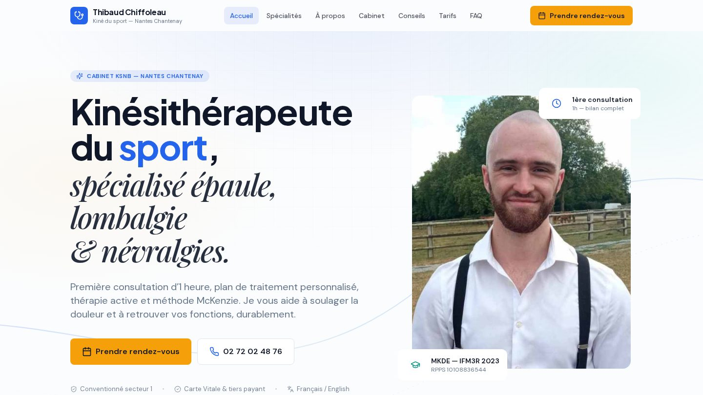

Automatiser ce qui vous ralentit
Recopier, trier, relancer : ces tâches répétitives peuvent passer dans des workflows n8n, Make ou Airtable. L’outil fait le travail mécanique, votre équipe garde la validation.
- n8n
- Make
- Airtable
Disponible en alternance dès 2027
En formation certifiante Oreegami (RNCP 40677, niveau 6) · Disponible en alternance dès 2027
J’ai passé des années à lire des situations humaines complexes et à trouver ce qui coince vraiment. Aujourd’hui, je construis les outils IA et les automatisations no-code qui règlent ces problèmes — simplement, sans jargon, avec des résultats qu’on peut mesurer.
Voir mes projetsCe que je fais
Recopier, trier, relancer : ces tâches répétitives peuvent passer dans des workflows n8n, Make ou Airtable. L’outil fait le travail mécanique, votre équipe garde la validation.
Avant de choisir une techno, je clarifie qui va s’en servir et pour quoi faire. Ensuite je construis en no-code et avec l’IA générative, puis j’ajuste avec les utilisateurs.
Pour les équipes non techniques : expliquer simplement ce que l’IA peut faire (et ce qu’elle ne fait pas), cadrer un premier cas d’usage utile, puis accompagner la prise en main.
Mes preuves
Des projets personnels et une réalisation pour un proche. Pour chacun : ce que j’ai fait, ce que ça montre, et ce qui reste à prouver.
 CAPTURE RÉELLE · ÉDITEUR n8n
CAPTURE RÉELLE · ÉDITEUR n8nUn workflow n8n qui orchestre quatre agents IA pour analyser un site web et produire un rapport d’audit priorisé : ce qu’il faut corriger d’abord, et pourquoi.
BriefOps transforme une demande vague en brief structuré : objectif, livrables, budget, délai — et surtout la liste de ce qui manque encore. Rien n’est inventé, et c’est une personne qui valide avant l’export.
Tester BriefOps maintenant
CAPTURE RÉELLE DU SITE EN LIGNELe site d’un kinésithérapeute proche : présentation des soins, identité visuelle et prise de contact pensée pour le mobile. Je n’affiche aucun gain de rendez-vous : rien n’a été mesuré.
Voir le site
Aussi : AnimApp. Un outil personnel né de mon expérience d’animateur : il traduit l’âge, la durée et la taille d’un groupe en idées d’activités que l’animateur reste libre d’adapter.
Ouvrir AnimAppÀ tester · BriefOps
Choisissez une demande, structurez-la, corrigez ce qui ne va pas, puis validez. C’est ma façon de cadrer un projet : rendre visible ce qui manque plutôt que de l’inventer.
Choisissez une demande, puis structurez-la.
Vous pourrez relire et corriger chaque champ.
Un champ absent devient une question, pas une réponse inventée.
Modifier un brief annule sa validation. L’export est verrouillé jusqu’à relecture.
Une interface sobre, un périmètre clair, une sortie réutilisable.
À tester · Automatisations n8n
Trois tâches courantes, trois modèles n8n téléchargeables. Lancez la simulation, puis ajustez les hypothèses à votre réalité : le calcul se met à jour.
Simulation illustrative : aucune connexion externe ni envoi de message.
0 / 5AVANT
APRÈS
LE POINT DE CONTRÔLE
Une estimation de temps opérationnel, à mesurer pendant un pilote.
Mon profil
J’ai travaillé plusieurs années dans des environnements à flux tendu : accueil, animation, coordination. Ce que j’en garde : la capacité à lire rapidement une situation, à identifier le vrai besoin derrière la demande formulée, et à m’adapter vite.
Aujourd’hui, j’applique cette lecture terrain aux outils numériques.
Ce que ça donne concrètement : je sais parler à des équipes non-techniques, comprendre leurs contraintes réelles, et construire des outils qu’elles vont réellement utiliser — pas des solutions qui restent dans un tiroir.
🎓 Formation en cours
🎬 Engagement associatif
Adhérent du VLIPP, association audiovisuelle nantaise. Une sensibilité communication et vidéo utile pour faire connaître et adopter un outil.
Les outils que j’utilise
Contact
Vous cherchez un alternant pour vos projets IA & no-code à partir de début 2027 ? Un process vous fait perdre du temps ? Racontez-le-moi : on regarde ensemble par où commencer.
Alternance au rythme Oreegami : 3 mois de bootcamp, puis 12 mois en entreprise.